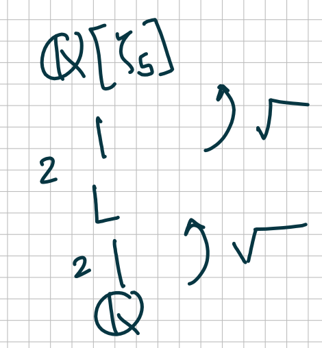

Algebra 2 (2023) Course Notes
Table of Contents
- 1. Introduction
- 2. Minimal polynomial
- 3. Degree
- 4. Irreducibility
- 5. Ruler and compass constructions
- 6. The fundamental theorem of algebra
- 7. Adjoining roots
- 8. Finite fields
- 9. Primitive elements
- 10. Function fields
- 11. An introduction to Galois theory
- 12. Symmetric polynomials
- 13. Splitting fields
- 14. The main theorem of Galois theory
- 15. Climbing the subfield wall
Disclaimer: These notes may not be complete, accurate, or accurately reflect what happened in class.
1. Introduction
Mathematics is broadly about two things: numbers and shapes. Of these, numbers are plainly in the realm of Algebra. We can also bring shapes into the realm of Algebra by considering functions on the shapes. Numbers and functions can be added and multiplied. More precisely, they form rings. In this class, we will study numbers and functions through the language of rings and fields.
1.1. Example: Integers and rational numbers
The simplest kinds of numbers are whole numbers, or elements of the ring \(\mathbf{Z}\). The next simplest are quotients of integers, or elements of the ring \(\mathbf{Q}\). Most of our “number rings” will be extensions of these.
1.2. Example: Polynomials and rational functions
The simplest kinds of functions are polynomial functions, or elements of the ring \(\mathbf{R}[x]\). (You can replace \(\mathbf{R}\) by others, like \(\mathbf{C}\) or \(\mathbf{Q}\)). The next simplest are the rational functions, or elements of \(\mathbf{R}(x)\). Most of our “function rings” will be extensions of these.
1.3. Example: Finite fields
There are other extremely important rings related to the integers. These are the rings \(\mathbf{Z}/n \mathbf{Z}\). We will mostly focus on the case of \(n = p\) a prime number, so that the ring above is a field. We will meet extensions of these, which are strictly speaking neither “function rings” or “number rings”, and not strictly speaking are both.
1.4. More number rings
Fix a number \(\alpha \in \mathbf{C}\). We denote by \(\mathbf{Z}[\alpha] \subset \mathbf{C}\) the smallest sub-ring of \(\mathbf{C}\) containing \(\mathbf{Z}\) and \(\alpha\). In other words, see for yourself that \[ \mathbf{Z}[\alpha] = \{a_{0} + a_1 \alpha + \dots + a_{n}\alpha^{n} \mid a_i \in \mathbf{Z}\}.\] More generally, given \(\alpha_{1}, \dots, \alpha_{m} \in \mathbf{C}\), we denote by \(\mathbf{Z}[\alpha_{1}, \dots, \alpha_{m}] \subset \mathbf{C}\) the smallest subring of \(\mathbf{C}\) containing \(\mathbf{Z}\) and \(\alpha_1, \dots, \alpha_{m}\). We can write elements of \(\mathbf{Z}[\alpha_{1},\dots, \alpha_{m}]\) just as before. More precisely, we have the following observation.
1.4.1. Proposition
Let \(\alpha_{1}, \dots, \alpha_{m} \in \mathbf{C}\) be given. Then \(\mathbf{Z}[\alpha_{1}, \dots, \alpha_{m}] \subset \mathbf{C}\) is the image of the homomorphism \[ \mathbf{Z}[x_1, \dots, x_m] \to \mathbf{C}\] that sends \(x_i \to \alpha_{i}\).
1.4.2. Example
Let us take \(\alpha = i\). Then you will see that \(\mathbf{Z}[i]\) can be described more simply by \[ \mathbf{Z}[i] = \{a_{0} + a_{1} i \mid a_{0}, a_{1} \in \mathbf{Z}\}.\] Higher powers of \(\alpha\) are not necessary!
1.4.3. Example
Take \(\alpha = \sqrt[3]{2}\) and notice that we only need the 0th, 1st, and 2nd power of \(\alpha\).
1.4.4. Example
Take \(\alpha = \pi\). Then, it is not clear that we can get away with only finitely many powers!
1.4.5. Lesson
The examples above suggest that sometimes, we can describe \(\mathbf{Z}[\alpha]\) using finitely many powers of \(\alpha\) and sometimes we cannot. This is an important distinction that we will formalise later.
1.5. Generalisation of \(\mathbf{Z}[\alpha_{1}, \dots, \alpha_{m}].\)
Let \(R \subset S\) be a sub-ring. Given \(\alpha_{1}, \dots, \alpha_{m}\), we define \(R[\alpha_{1}, \dots, \alpha_{m}]\) as the smallest subring of \(S\) that contains \(R\) and each of \(\alpha_{1}, \dots, \alpha_{m}\). As before, it is the image of the homomorphism \[ R[x_{1}, \dots, x_{n}] \to S\] that sends \(R \to S\) by the given inclusion and sends \(x_{i}\) to \(\alpha_{i}\).
2. Minimal polynomial
Let us look more closely at the rings \(\mathbf{Q}[\alpha] \subset \mathbf{C}\), or more generally, rings \(F[\alpha] \subset K\), where \(F \subset K\) are fields. We will see that it is simpler to study \(\mathbf{Q}[\alpha]\) rather than \(\mathbf{Z}[\alpha]\).
The key point was that \(F[\alpha] \subset K\) is the image of the ring homomorphism \[ \phi \colon F[x] \to K \] that sends \(F \to K\) by the given inclusion and sends \(x\) to \(\alpha\). Let \(I \subset F[x]\) be the kernel of \(\phi\). The first isomorphism theorem gives an isomorphism \[ F[x]/I \to F[\alpha].\] So, if we want to understand \(F[\alpha]\), it is critical to understand \(I\).
We know that \(I \subset F[x]\) is an ideal. And fortunately, we know a lot about ideals of \(F[x]\). Let us recall what we know.
- Every ideal of \(F[x]\) is a principal ideal. In fact, if \(I \subset F[x]\) is an ideal, and if \(f \in I\) is an element of the smallest degree, then \(I = (f)\).
- The ideal \((f)\) is contained in the ideal \((g)\) if and only if \(g\) divides \(f\).
- The maximal ideals of \(F[x]\) are \((f)\) where \(f\) is an irreducible polynomial.
- The prime ideals of \(F[x]\) are the ideal \((0)\) and the maximal ideals as above.
Let us now look at \(I = \mathrm{ker}\phi\). The ring \(F[x]/I\) is isomorphic to a sub-ring of \(K\), which is a field. Therefore, \(F[x]/I\) is an integral domain. So \(I\) is a prime ideal.
Now there are two possibilities:
- \(I = 0\) :: In this case, there are no polynomials in the kernel of \(\phi\). This means that there is no polynomial in \(F[x]\) that vanishes when you substitute \(x = \alpha\). In this case, we say that \(\alpha \in K\) is transcendental over \(F\).
\(I = (f)\) where \(f\) is a non-zero irreducible polynomial :: In this case, there is a polynomial in the kernel of \(\phi\). That is, there is a polynomial in \(F[x]\) that vanishes when you substitute \(x = \alpha.\) In this case, we say that \(\alpha \in K\) is algebraic over \(F\).
The minimal polynomial of \(\alpha\) or the irreducible polynomial of \(\alpha\) is characterised by any of the following equivalent conditions:
- It generates the kernel of \(\phi \colon F[x] \to K\) that sends \(x \to \alpha\).
- It is an irreducible polynomial that vanishes when you substitute \(x = \alpha\).
It is a polynomial of the smallest degree that vanishes when you substitute \(x = \alpha\).
(Strictly speaking, the conditions determine \(f\) only up to scaling. To remedy this, we usually take \(f\) to be monic.)
2.1. Examples
2.3. Question
Take \(\alpha = \sqrt[3]{2}\), for example, which is algebraic over \(\mathbf{Q}\). Then Proposition 2.2 says that \(\mathbf{Q}[\alpha]\) is a field. How will you explicitly find the multiplicative inverse of its elements? For example, what is the inverse of \(\sqrt[3]{2}\)? Of \(1 + \sqrt[3]{2}\)?
2.4. Proposition
Let \(\alpha, \beta \in K\) be algebraic over \(F\). There is an isomorphism \(F[\alpha] \to F[\beta]\) extending the identity of \(F\) that sends \(\alpha \mapsto \beta\) if and only if \(\alpha\) and \(\beta\) have the same minimal polynomial.
2.4.1. Proof
See 15.2.8 in the book.
2.5. Summary
We have the following dichotomy.
| \(\alpha\) algebraic | \(\alpha\) transcendental |
|---|---|
| \(F[x] \to K, x \mapsto \alpha\) has a non-zero kernel | \(F[x] \to K, x \mapsto \alpha\) has zero kernel |
| \(\alpha\) satisfies a polynomial equation | \(\alpha\) does not satisfy a polynomial equation |
| \(F[\alpha]\) is a field | \(F[\alpha]\) is not a field (just a domain) |
| \(F[\alpha]\) is a finite dimensional \(F\)-vector space | \(F[\alpha]\) is an infinite dimensional \(F\)-vector space. |
3. Degree
Let \(\alpha \in K\) be algebraic over \(F\). The degree of \(\alpha\) over \(F\), denoted by \(\deg(\alpha/F)\) is
- the degree of its minimal polynomial,
- the dimension of \(F[\alpha]\) as an \(F\)-vector space.
(The two numbers are equal).
More generally, let \(F \subset L\) be fields. We say that \(L/F\) is a finite extension if \(L\) is a finite dimensional \(F\)-vector space. The degree of \(L/F\) is the dimension of \(L\) as an \(F\)-vector space.
Observe that \(\deg(\alpha/F) = \deg(F[\alpha]/F)\).
3.1. Example
Let \(L = \mathbf{Q}[i, \sqrt 2]\). Then \(\deg (L / \mathbf{Q}) = 4\).
3.2. Multiplicative property of the degree
Let \(F \subset L\) and \(L \subset K\) be finite extensions. Then \(F \subset K\) is also finite and \[ \deg(F/K) = \deg(L/F) \cdot \deg (L/K).\]
3.3. Application
If \(\alpha, \beta\) are algebraic over \(F\) then \(\alpha\beta\) and \(\alpha+\beta\) are algebraic over \(F\).
3.3.1. Proof
Look at \(F \subset F[\alpha] \subset F[\alpha,\beta]\).
3.4. Example
So we know that \(\sqrt 2 + \sqrt 3\) is algebraic. But what is its minimal polynomial? The method of proof does not really give a way to find out. One way to find a polynomial is by taking repeated powers and looking for a linear relation, but we still need tools to prove that the polynomial we found is irreducible.
3.5. Example
The degree of \(\mathbf{Q}[\sqrt[3]2, i] / \mathbf{Q}\) is 6.
3.6. Corollary
If \(F \subset L\) is an extension of degree \(M\), then the degree of all sub-extensions must divide \(M\). In particular, the degree of every \(\alpha \in L\) must divide \(M\).
For example, an extension of degree \(2^{n}\) cannot contain an element of degree 3.
4. Irreducibility
We want to develop some tools to prove irreducibility of polynomials. Let us study irreducibility and irreducible factorisation in an arbitrary integral domain \(R\).
4.1. Terminology
- A non-trivial factorisation of \(p \in R\) is an expression \(p = ab\) where neither \(a\) nor \(b\) is a unit.
- We say that \(p\) is irreducible if it has no non-trivial factorisation.
- In general, a factorisation of \(f\) into irreducibles is a factorisation \(f = p_1 \cdots p_n\) where each \(p_{i}\) is irreducible.
- We say that two factorisations \(f = p_1 \cdots p_{n}\) and \(f = q_1 \cdots q_{m}\) are equivalent if \(m = n\) and after re-numbering, we have for all \(i)\) an equality \(f_i = g_i \times u_i\) where \(u_i\) is a unit.
- We say that \(R\) has unique factorisation or is a Unique Factorisation Domain if every element of \(R\) has a factorisation into irreducibles and this factorisation is unique up to equivalence.
4.2. Example
- \(\mathbf{Z}\) is a UFD.
4.3. Proposition
Let \(F\) be a field. Then \(F[x]\) is a UFD.
4.3.1. Proof:
It is easy to see that every polynomial \(f\) has a factorisation into irreducibles (keep factoring until you cannot). The interesting part is uniqueness. Suppose \[ p_1 \cdots p_{n} = q_{1} \cdots q_{m}.\] Consider \(p_{1}\) on the left. It suffices to show that there is an \(i\) such that \(q_{i} = p_{1} \cdot u \) for a unit \(u\). We then cancel \(p_1\) from both sides and continue. In fact, it suffices to show that there is an \(i\) for which \(p_{1}\) divides \(q_i\) (irreducibility of \(q_i\) implies that the other factor must be a unit). So the key fact is the following:
- Key fact that makes unique factorisation work
If \(p\) is irreducible, and \(p\) divides \(q_1q_2\) then \(p\) divides \(q_1\) or \(p\) divides \(q_2\). Equivalently, if \(p\) is irreducible then \((p)\) is a prime ideal.
We know that the key fact holds because if \(p\) is irreducible then \((p)\) is in fact a maximal ideal.
- Coming back to the proof
By using the key fact repeatedly, we see that \(p\) divides one of the \(q_{i}\)’s.
4.3.2. Lesson
If \(R\) is a domain in which every irreducible element generates a prime ideal. Then any two factorisations of \(f \in R\) must be equivalent.
4.4. Factorisation over finite fields and integers
Let us come back to the main question: how do we show that a given polynomial is irreducible?
- Over finite fields
Suppose \(R = F[x]\). Then we can just list all the irreducible polynomials in \(F[x]\) by making a sieve. We make a list of polynomials up to a given degree, ordered by the degree: linears, quadratics, cubics, … The linears are automatically irreducible. We take a linear polynomial and cross out every higher degree one that is divisible. We keep going. What remains are the irreducible ones.
This is probably not the most efficient method to test irreducibility, but it works!
- Over the rational numbers
What if \(R = \mathbf{Q}[x]\)? Then we cannot sieve because there are infinitely many polynomials of a given degree. There are algorithmic irreducibility tests (read the end of Section 12.4), but they are a bit involved.
Instead of studying them, we will learn a handful of tools that will be enough for most purposes.
The key idea is the following. We have the diagram \[ \mathbf{Z}/p \mathbf{Z} [x] \leftarrow \mathbf{Z}[x] \rightarrow \mathbf{Q}[x].\] We understand factorisation on the left. It turns out that there is not much difference between irreducibility in \(\mathbf{Z}[x]\) versus \(\mathbf{Q}[x]\). And we can make deductions about factorisation in \(\mathbf{Z}[x]\) by reducing modulo \(p\).
The next two propositions exemplify this idea.
- Proposition
Let \(p \in \mathbf{Z}\) be a prime. Suppose \(f(x) = a_{n} x^n + \cdots \in \mathbf{Z}[x]\) is such that \(p\) does not divide \(a_{n}\) and \(\overline f(x) \in \mathbf{Z}/p \mathbf{Z} [x]\) is irreducible. Then \(f(x)\) cannot factor as \(f(x) = h(x) g(x)\) in \(\mathbf{Z}[x]\) where \(h\) and \(g\) are non-constant.
- Proposition (Eisenstein’s criterion)
Let \(p \in \mathbf{Z}\) be a prime. Suppose \(f(x) = a_{n} x^n + \cdots + a_{0} \in \mathbf{Z}[x]\) is such that \(p\) does not divide \(a_{n}\), divides all other \(a_i\) but \(p^2\) does not divide \(a_{0}\). Then \(f(x)\) cannot factor as \(f(x) = h(x) g(x)\) in \(\mathbf{Z}[x]\) where \(h\) and \(g\) are non-constant.
4.5. Factorisation over the rational numbers
Let us relate factorisation over \(\mathbf{Q}[x]\) and \(\mathbf{Z}[x]\). Consider the factorisation \[ 3x+3 = 3 \cdot (x+1).\] This is a non-trivial factorisation in \(\mathbf{Z}[x]\) but trivial one in \(\mathbf{Q}[x]\). This is basically the only difference in the theory.
To get rid of factorisations as above, we introduce the following notion. We say that \(f(x) \in \mathbf{Z}[x]\) is a primitive polynomial if no prime \(p \in \mathbf{Z}\) divides \(f(x)\). Equivalently, for every prime \(p\), the image of \(f(x)\) in \(\mathbf{Z}/p \mathbf{Z}[x]\) is non-zero. Equivalently, we cannot extract a non-unit constant factor. By convention, we also require the leading coefficient of \(f(x)\) to be positive (this is less important; if we don’t do this, we have to amend most of the following statements by adding “up to sign” or “up to a unit in \(\mathbf{Z}\)”).
If \(f(x)\in \mathbf{Z}[x]\) is not primitive, we can simply extract out all primes \(p\) that divide it. In other words, we can write \[ f(x) = c g(x)\] where \(c \in \mathbf{Z}\) and \(g(x)\) is primitive.
More generally, if \(f(x) \in \mathbf{Q}[x]\), then we can take a common denominator of all coefficients and write \(f(x) = 1/N \cdot h(x)\) where \(h(x) \in \mathbf{Z}[x]\). We can then extract a constant factor out of \(h(x)\) if any and get \[ f(x) = c g(x) \] where \(c \in \mathbf{Q}\) and \(g(x) \in \mathbf{Z}[x]\) is primitive. It is easy to check that the expression above is unique.
Slogan: For primitive polynomials, factorisation in \(\mathbf{Q}[x]\) and \(\mathbf{Z}[x]\) behave in the same way.
We will make this precise. First, we need an easy lemma.
4.5.1. Lemma (Gauss’s lemma)
The product of two primitime polynomials is primitive.
4.5.2. Proposition
Let \(f(x)\) be a primitive polynomial and \(g(x) \in \mathbf{Z}[x]\) any polynomial. Suppose \(g(x) = f(x) h(x)\) for some \(h(x) \in \mathbf{Q}[x]\). Then \(h(x) \in \mathbf{Z}[x]\).
- Proof
Write \(h(x) = c j(x)\) where \(j(x)\) is primitive and \(c = a/b \in \mathbf{Q}\) (reduced form) and \(g(x) = d i(x)\) where \(d \in \mathbf{Z}\) and \(i(x)\) is primitive. Then \(bd i(x) = a f(x) j(x)\). But \(i(x)\) and \(f(x)j(x)\) are both primitive, so we must have \(bd = a\) and \(i(x) = f(x)j(x)\). In particular, \(a/b = d\) is an integer, and so \(h(x) \in \mathbf{Z}[x]\).
4.5.3. Proposition
Let \(f(x) \in \mathbf{Z}[x]\) be primitive. Then \(f(x)\) is irreducible in \(\mathbf{Z}[x]\) if and only if it is irreducible in \(\mathbf{Q}[x]\).
- Proof
Let us prove the contrapositive. Suppose \(f(x) = g(x) h(x)\) in \(\mathbf{Z}[x]\) is a non-trivial factorisation. Then neither \(g\) nor \(h\) are constant (because \(f\) is primitive). But then this is also a non-trivial factorisation in \(\mathbf{Q}[x]\).
Conversely, suppose \(f(x) = g(x) h(x)\) in \(\mathbf{Q}[x]\) is a non-trivial factorisation. Write \(g(x) = c i(x)\) and \(h(x) = d j(x)\) where \(c,d \in \mathbf{Q}\) and \(i,j\) are primitive. Then \(f(x) = cd i(x)j(x)\) implies that \(cd = 1\), so we may as well write \(f(x) = i(x) j(x)\). This is a non-trivial factorisation in \(\mathbf{Z}[x]\).
4.5.4. Corollary
The irreducible elements of \(\mathbf{Z}[x]\) are prime numbers \(p\) and primitive polynomials \(f(x)\) that are irreducible in \(\mathbf{Q}[x]\).
4.5.5. Remark
From this, it is not hard to prove that every irreducible in \(\mathbf{Z}[x]\) generates a prime ideal. So \(\mathbf{Z}[x]\) is also a UFD. In general, a similar reasoning using primitive polynomials shows that if \(R\) is UFD then \(R[x]\) is also a UFD.
4.5.6. Summary
Suppose we are given \(f(x) \in \mathbf{Q}[x]\). By multiplying by a constant, we may assume that \(f(x) \in \mathbf{Z}[x]\) is primitive. Then irreducibility in \(\mathbf{Q}[x]\) is equivalent to the irreducibility in \(\mathbf{Z}[x]\). To prove irreducibility in \(\mathbf{Z}[x]\), we look modulo primes (for example, Eisenstein’s criterion).
5. Ruler and compass constructions
A fascinating application of the algebra we have done so far is the proof for the impossibility of certain geometric constructions. In particular, we will see that there does not exist a geometric construction using only ruler and compass that can trisect a given angle. But first, here are the rules of the game.
- You are given a finite set of points in the plane. These points are assumed to be constructed.
- The ruler allows you to draw a straight line between any two constructed points.
- The compass allows you to draw a circle centered at a constructed point and passing through a constructed point.
You may add the intersection points of the lines and circles you draw to the set of constructed points, and use the ruler and compass any (finite) number of times.
Lots of cool things can be done.
5.1. Example
- Given two points, construct their midpoint.
- Given three points \(A, B, C\), construct the angle bisector.
- Given three points \(A, B, C\), construct the unique circle passing through \(A, B, C\).
- Given two points \(A, B\), divide the segment \(AB\) in 79 equal parts (or any other number).
- …
5.2. Algebraising the construction game
To bring algebra into the picture, we introduce coordinates. Let a set of constructed points \(S\) be given. Suppose \(F \subset \mathbf{R}\) is a field that contains all the coordinates of \(S\). The key idea is to explore in what ways \(F\) needs to be enlarged when we construct new points.
5.2.1. Using the ruler
Suppose we draw a line joining two points of \(S\). Observe the following: we can write the equation of the line in the form
ax + by = c
where \(a,b,c\) are in the field \(F\).
5.2.2. Using the compass
Suppose we draw a circle centered at a point of \(S\) passing through another point of \(S\). Observe the following: we can write the equation of the circle in the form
(x-a)2 + (y-b)2 = c
where \(a,b,c\) are in the field \(F\).
5.2.3. Taking intersections
Now is the most crucial part. We add new points by intersecting.
- Intersecting two lines
- the intersection point of two lines of the form 1 has coordinates in \(F\). So \(F\) need not be enlarged.
- Intersecting a circle and a line
- the intersection point(s) of a line 1 and circle 1 have coordinates in \(F[\sqrt a]\) for some \(a \in F\).
- Intersecting two circles
- the intersection point(s) of two circles 1 have coordinates in \(F[\sqrt a]\) for some \(a \in F\).
In summary, if we start with a set of constructed points whose coordinates lie in \(F\), any new point we add must have its coordinates either in \(F\) or in \(F[\sqrt a]\) for some \(a \in F\). By repeating our reasoning, we get the following.
5.3. Proposition (Main)
Let \(P\) be a point constructed using the ruler and compass from a given set \(S\). Assume that the coordinates of \(S\) lie in a field \(F\). Then there exist extensions \[ F_{0} = F \subset F_1 \subset \dots \subset F_{n}\] of the form \(F_{i+1} = F_i[\sqrt a_i]\) for some \(a_i \in F_i\) and such that the coordinates of \(P\) lie in \(F_{n}\).
In particular, the degree of the extension of \(F\) generated by the coordinates of \(P\) is a power of 2.
5.4. Corollary
If the coordinates of \(P\) generate a transcendental extension of \(F\) or an extension whose degree is not a power of 2, then \(P\) cannot be constructed from \(S\) using ruler and compass.
5.5. Proposition
We start with the points \((0,0)\) and \((0,1)\). Then the point \((\cos 20, \sin 20)\) cannot be constructed. In particular, the \(60\)-degree angle cannot be trisected, and hence there cannot exist a procedure that trisects a given angle.
- Proof
We can take \(F = \mathbf{Q}\). Trigonometry gives us the triple angle formula \[ \cos(3\theta) = 4 \cos^3(t) - 3 \cos(\theta).\] So \(\cos(20)\) satisfies the equation \[ 1/2 = 4 x^3 - 3x\] or equivalently \[ 8x^3-6x-1 = 0.\] This is irreducible mod 5 and hence irreducible. So \(\cos(20)\) has degree 3 over \(\mathbf{Q}\). But that means it is not constructible!
6. The fundamental theorem of algebra
We say that a field \(K\) is algebraically closed if every non-constant \(f(x) \in K[x]\) has a root in \(K\).
The following are equivalent:
- \(K\) is algebraically closed.
- Every \(f(x) \in K[x]\) factorises into linear factors.
- The only irreducible \(f(x) \in K[x]\) are linear.
- There is no non-trivial finite extension of \(K\).
- There is no non-trivial algebraic extension of \(K\).
6.1. Theorem (Fundamental theorem of algebra)
The field of complex numbers is algebraically closed.
6.2. Corollary
Let \(\overline Q \subset \mathbf{C}\) be the set of numbers that are algebraic over \(\mathbf{Q}\). Then \(\overline Q\) is algebraically closed.
6.3. Corollary
The only irreducible polynomials over \(\mathbf{R}\) are linear and quadratics with negative discriminant.
6.4. Proof(s) of the FTA
Funnily enough, there is no purely algebraic proof of the Fundamental Theorem of Algebra! This is somewhat expected because the construction of \(\mathbf{C}\) goes via the construction of \(\mathbf{R}\), which is quite non-algebraic. So at some point in the proof, some analysis or topology comes in. I consider this is a spectacular example of the unity of mathematics: how different fields of mathematics help each other!
6.4.1. Winding number proof
A fascinating proof is topological, and uses the notion of “winding number”.
Suppose we have a closed curve in \(\mathbf{C} \setminus 0\), which we encode by a map \(f \colon S^1 \to \mathbf{C} \setminus 0\). We can define a number \(W(f)\) that counts how many times \(f\) “winds around 0”. Defining this rigorously takes some effort, but the key feature of the definition is the following.
Proposition If \(f\) can be continuously deformed into \(g\) while staying in \(\mathbf{C} \setminus 0\) then \(W(f) = W(g)\) .
Here, the technical term for “continuously deform” is “homotopy”.
Lemma (Dog on a leash) If \(h(x)\) is such that \(|h(x)| < |f(x)|\), then \(W(f) = W(f+h)\).
We are now ready to prove the fundamental theorem of algebra.
Suppose \(f(x) \in \mathbf{C}[x]\) is of degree \(n \geq 1\) and has no zeros. We will obtain a contradiction by considering curves of the form \(z \mapsto f(\lambda z)\) where \(\lambda\) is a constant and \(z\) moves on the unit circle. First, if \(\lambda\) is small, then dog-on-a-leash gives winding number 0. Second, if \(\lambda\) is huge, then dog-on-a-leash gives winding number \(n\). But we can continuously move between these by taking \(\lambda\) from a small number to a large number. This is a contradiction.
6.4.2. Complex analysis proof
We have the following theorem in complex analysis.
Theorem (Liouville) If \(f \colon \mathbf{C} \to \mathbf{C}\) is holomorphic and bounded, then \(f\) is constant.
Suppose \(p(x) \in \mathbf{C}[x]\) does not have a zero. Then \(f(x) = 1/p(x)\) is a bounded holomorphic function. By Liouville’s theorem, it must be constant.
7. Adjoining roots
Consider the field \(\mathbf{Q}\). We know that it sits in \(\mathbf{C}\), which is algebraically closed. So, although solving algebraic equations over \(\mathbf{Q}\) is not always possible, we can always extend our field by adjoining elements of \(\mathbf{C}\). We never have to face a “lack of solutions”—they are always there in \(\mathbf{C}\).
For a field like \(F = F_{5}\), things are more complicated. Suppose we want to solve \[ x^{2} - 2 = 0.\] That is, we want our number system to have a square root of 2. What do we do? There is nothing like \(\mathbf{C}\) (that we know of) for \(F\).
That does not stop us, however. Consider \(K = F[x]/(x^2-2)\). Then \(K\) is a field extension of \(F\). Let \(\alpha = [x] \in K\). Then \(\alpha^2 - 2 = 0.\) So in \(K\), we have a square root of 2. We have constructed “\(\sqrt{2}\)” out of thin air!
7.1. Adjoining a root
Proposition Let \(F\) be a field and let \(p(x) \in F[x]\) be a non-constant polynomial. Then there exists a finite extension \(F \subset K\) such that \(p(x)\) has a root in \(K\). Proof Let \(f(x)\) be an irreducible factor of \(p(x)\). Take \(K = F[x]/f(x)\). Then \(\alpha = [x]\) is a root of \(p(x)\).
Suggestion: How do you represent elements of \(K\)? If \(f(x)\) has degree \(n\), then the elements can be identified with polynomials in \(F[x]\) of degree up to \(n-1\), with addition and multiplication done modulo \(f(x)\). Psychologically, I find it useful to rename \(x\) to a letter from the beginning of the alphabet, like \(a\) or \(\alpha\) so that the elements of \(K\) feel more like numbers than polynomials. This makes it less confusing if we have to make further extensions of \(K\), freeing up \(x\) for polynomials.
7.1.1. Example
Let us take \(F = \mathbf{Q}\) and \(p(x) = x^3-2\). Then \(K = F[x]/(x^3-2)\). Note that \(K\) does not come with an embedding in \(\mathbf{C}\). You should not think of it as a subfield of \(\mathbf{C}\). Think of it as just hovering over \(\mathbf{Q}\)—spectral, disembodied, incorporeal!
Of course, we can embedd \(K\) into \(\mathbf{C}\). But there are many ways to do so. Precisely, three of them, corresponding to \(x \mapsto \sqrt[3]{2}\) or \(x \mapsto \omega\sqrt[3]{2}\) or \(x \mapsto \omega^{2}\sqrt[3]{2}\) where \(\omega = e^{2\pi i/3}\).
7.2. Adjoining all roots
Proposition Let \(F\) be a field and let \(p(x) \in F[x]\) be a non-constant polynomial. Then there exists a finite extension \(F \subset K\) such that \(p(x)\) splits into linear factors in \(K[x]\). Proof Adjoin a root. Factor it out. Adjoin a root of the remaining polynomial. Rinse, repeat.
Definition We say that \(K/F\) is a splitting field of \(p(x)\) if \(p(x)\) splits into linear factors in \(K[x]\) and \(K\) is generated by the roots of \(p\).
The second condition ensures that \(p(x)\) does not factor completely over a subfield of \(K\).
7.2.1. Example
The splitting field of \(x^3-2\) over \(\mathbf{Q}\) is \(\mathbf{Q}[\sqrt[3]{2}, \omega]\). Note that it has degree 6 over \(\mathbf{Q}\).
7.2.2. Example
Consider \(p(x) = 8x^3-6x-1\). Its roots are: \(\cos(20), \cos(140), \cos(260)\). Suppose we adjoin one root, say \(\cos(20)\). Then we automatically get the other two roots (cosine of \(n\theta\) is a polynomial in \(\cos \theta\) with rational coefficients!). So the splitting field is only of degree 3.
8. Finite fields
We have some finite fields arleady, like \(\mathbf{F}_p = \mathbf{Z} / p \mathbf{Z}\). We will now see all of them!
8.1. Finite fields have characteristic \(p\).
Recall that the characteristic of a ring \(R\) is the smallest integer \(n\) such that \(n = 0\) in \(R\). Equivalently, it is the generator of the kernel of the map \(\mathbf{Z} \to R\). If \(R\) is a domain, then the generator must be a prime number. In particular, if \(R = F\) is a finite field, then the kernel must be \((p)\) for some \(p\). Then we have an injection \(\mathbf{F}_p \to F\).
Proposition Every finite field \(F\) admits a unique injection \(\mathbf{F}_p \to F\) where \(p\) is the characteristic of \(F\).
8.2. Finite fields have \(p^r\) elements.
Let \(F\) be a finite field. Suppose \(F / \mathbf{F}_p\) is an extension of degree \(r\). Then \(F\) is an \(r\)-dimensional \(\mathbf{F}_p\) vector space. In particular, it has \(q = p^r\) elements.
8.3. Finite fields have a Frobenius automorphism \(\phi\)
Let \(R\) be a ring of characteristic \(p\). Then the map \(x \mapsto x^p\) is a ring homomorphism, called the Frobenius map. In particular, every finite field admits a Frobenius \(\phi \colon F \to F\). Since \(F\) is a field, \(\phi\) is injective, and since \(F\) is finite, it is also surjective.
8.4. Fermat’s little theorem: \(x^q = x\)
The multiplicative group \(F^{\times}\) has order \(q-1\), so for every \(x \in F\) we have \(x^{q-1} = 1\). Multiplying by \(x\), we get \(x^q = x\) for every \(x \in F\). In terms of the Frobenius, the above means that \[ \phi^r = \operatorname{id}.\]
8.5. The group \(F^{\times}\) is cyclic
8.5.1. Proof
By the structure theorem for abelian groups, it is a product of cyclic groups, say \[ F^{\times} = \mathbf{Z}/m_1 \mathbf{Z} \times \dots \times \mathbf{Z}/ m_n \mathbf{Z}.\] Let \(m = \operatorname{lcm}(m_1, \dots, m_n)\). Observe that we have \(q - 1 = m_1 \cdots m_{n}. \) Then we have \(x^{m+1} = x\) for all \(x \in \mathbf{F}\). This is a polynomial equation of degree \(m+1\) so it can have at most \(m+1\) solutions. As a result, we get \(m = q-1\). But then the \(m_i\) must be pairwise relatively prime (otherwise, their lcm will be smaller than the product). By the Chinese Remainder Theorem, we see that \(F^{\times}\) is isomorphic to \(\mathbf{Z} / m_1\cdots m_n \mathbf{Z}\).
8.6. \(F \cong \mathbf{F}[x]/f(x)\) for \(f\) irreducible
Indeed, let \(\alpha\) be a generator of \(F^{\times}\). Then \(F = \mathbf{F}_p[\alpha]\), which is isomorphic to \(\mathbf{F}_p[x]/f(x)\) where \(f(x)\) is the minimal polynomial for \(\alpha\).
8.7. Existence of \(F\) with \(q = p^{r}\) elements
For every \(q\), does there exist a finite field with \(q\) elements? Equivalently, for every \(r\), do we have an irreducible polynomial in \(\mathbf{F}_p[x]\) of degree \(r\)?
The answer is Yes! Let us construct \(F\) with \(q\) elements.
We know that the elements of such \(F\) have to be roots of \(x^q-x = 0\). So, to construct \(F\), we just formally adjoin the roots! More precisely, we know that there is a finite extension \(K / \mathbf{F}_p\) such that \(x^q-x\) splits into linear factors in \(K\).
Proposition The polynomial \(x^q-x\) has distinct roots in \(K\).
To prove this we have to take a slight digression and understand multiple roots.
8.8. Digression: derivatives and multiple roots
Let \(F\) be any field. We define the derivative of a polynomial formally. That is, if \(f(x) = \sum a_i x^{i}\) then \(f'(x) = \sum i a_i x^{i-1}.\) With this definition, the sum/product/chain rules continue to hold!
Proposition If \(\alpha \in F\) is a multiple root of \(f(x)\), then \((x-\alpha)\) divides \(f(x)\) and \(f'(x)\). Corollary If \(f\) has a multiple root then \(\gcd(f(x), f'(x))\) is non-constant.
8.9. Back to constructing finite fields
Consider the polynomial \(x^q - x\). Its derivative is \(1\)! So it cannot possible have multiple roots! As a result, it has \(q\) distinct roots in \(K\).
Proposition The set of roots of \(x^q-x\) forms a subfield of \(K\).
We have now constructed (!) a field with \(q\) elements.
8.9.1. Proof
It is easy to check by hand that this set contains \(0,1\) and is closed under \(+\) and \(*\), from which the statement follows. More conceptually, consider the automorphism \(\phi^r \colon K \to K\). The set is the set of fixed points of this automorphism. The set of fixed points of a field automorphism is a subfield. (Another example: conjugation on \(\mathbf{C}\) is an automorphism; it has fixed points \(\mathbf{R}\).)
8.10. But really: how do you construct one in practice?
Thanks to what we have proved, we know that there exists an irreducible polynomial of every given degree. We find one and set \(F = \mathbf{F}_p[x]/f(x)\).
Note that there are many choices for \(f\) and hence we get many possible \(F\). But… wait for it….
8.11. Uniqueness up to isomorphism
Let \(F\) and \(L\) be finite fields of size \(q = p^r\). Then there is an isomorphism \(F \cong L\). In fact, there are exactly \(r\) isomorphisms.
8.11.1. Proof
Write \(F = \mathbf{F}_p[x]/f(x)\) where \(f \in \mathbf{F}_p[x]\) is irreducible of degree \(r\). It suffices to construct a map (ring hom) \(F \to L\). To give such a map, we must send \(x \in F\) to \(\alpha \in L\) which is a root of \(f(x)\).
We know two things:
- \(f(x)\) divides \(x^q-x\).
- \(x^q-x\) splits into distinct linear factors over \(L\).
It follows that \(f(x)\) also factors into distinct linear factors over \(L\). That is, it has \(r\) distinct roots in \(L\).
8.12. Containments
Let \(F\) be a field of size \(q = p^{r}\). If \(F\) contains a field of size \(p^{s}\) then \(s\) divides \(r\). Conversely, if \(s\) divides \(r\), then \(F\) contains a unique subfield of size \(p^{s}\).
8.12.1. Proof
Suppose \(F\) contains \(K\) of size \(p^{s}\). Then we can view \(F\) as an extension of \(K\). If the extension has degree \(m\), then \(|F| = |K|^m\), which implies \(p^r = p^{sm}\), so \(r = sm\).
Conversely, suppose \(s\) divides \(r\). An element of sub-field of size \(p^s\) in \(F\) must satisfy \(x^{p^s}-x = 0\). So, the only possible sub-field of this size in \(F\) is the set of roots of the equation \(x^{p^s}-x = 0\). This proves uniqueness. For the existence, we must prove that this equation does indeed have \(p^s\) distinct roots. To do so, observe the following fact (true over any field): \(x^a-1\) divides \(x^{b}-1\) if \(a\) divides \(b\). So \(p^{s}-1\) divides \(p^{r}-1\). And \(x^{p^s-1}-1\) divides \(x^{p^r-1}-1\). So \(x^{p^s}-x\) divides \(x^{p^r1}-x\). But the latter splits into distinct linear factors, so the former must as well.
8.12.2. Lesson
To find a subfield of size \(p^{s}\) in a finite field of size \(p^r\), we simply take the fixed points of the \(s\))-th power of Frobenius.
9. Primitive elements
Let \(K/F\) be a finite extension. We say that \(\alpha \in K\) is a primitive element for the extension if \[ K = F(\alpha).\] That is, every element of \(K\) can be written as a polynomial in \(\alpha\) with coefficients in \(F\). It is useful to know if a primitive element exists because then we have \[ K \cong F[x]/f(x),\] where \(f(x)\) is the minimal polynomial for \(\alpha\). This is a particular simple kind of extension.
We have already seen the following theorem. Theorem: Let \(K/F\) be an extension of finite fields. Then a primitive element exists. Proof: Just take \(\alpha\) to be a generator of the cyclic group \(K^{\times}\).
Our main goal today is to prove the following theorem. Theorem: Let \(K/F\) be a finite extension of fields of characteristic 0. Then a primitive element exists.
Since \(K/F\) is finite, we already know that there exist finitely many \(\alpha_1, \dots, \alpha_{m}\) such that \[ K = F[\alpha_1, \dots, \alpha_m].\] The point is that one \(\alpha\) is enough.
Example: Take \(K = \mathbf{Q}[\sqrt 2, \sqrt 3]\). Then \(\alpha = \sqrt 2 + \sqrt 3\) is a primitive element.
In my opinion, the primitive element theorem sounds more useful than it is in practice. In practice, it is often more useful to know \(K = F[\alpha_1, \dots, \alpha_m]\) for a big \(m\) rather than \(m = 1\). Because in that case, we can easily break up the extension into smaller sub-extensions. If \(K = F[\alpha]\), it is less obvious if it can be broken up.
9.1. GCD and derivatives
Before we begin, let us collect a few useful facts that we already know. Fix fields \(F \subset K\).
Proposition Suppose we have \(f(x), g(x) \in K[x]\) that actually lie in \(F[x]\). Then their (monic) gcd \(\gcd(f,g)\) also lies in \(F[x]\). Proof There are many ways to see this. The most direct is to observe that the gcd can be computed by Euclid’s algorithm, which will never leave \(F[x]\) if it starts with two polynomials in \(F[x]\). Another way is to use that \(\gcd(f,g)\) can be written as \(f(x) a(x) + g(x) b(x)\) for \(a(x), b(x) \in F[x]\).
The next observation is about repeated roots and derivatives. Proposition: If \(\gcd(f, f') = 1\), then \(f\) has no repeated roots in \(K\).
Note that if \(f(x) \in F[x]\), then \(f'(x) \in F[x]\) and so the gcd will also live in \(F[x]\).
Corollary: If \(f\) is irreducible in \(F[x]\) and \(f' \neq 0\), then \(f\) has no repeated roots in \(K\). Proof: If \(f\) is irreducible in \(F[x]\), and \(f' \neq 0\), then \(f' \in F[x]\) has lower degree than \(f\). So \(\gcd(f,f')\), which lies in \(F[x]\), must be 1.
Corollary: If \(f\) is irreducible and \(F\) is of characteristic 0, then \(f\) has no repeated roots in \(K\). Proof: We may assume \(f\) is non-constant. Then \(f' != 0\) is automatic in characteristic 0 (but not in characteristic \(p\)!).
9.2. Proof of the primitive element theorem
To be frank, the statement of the primitive element theorem is more important than the proof. Even within the proof, the statement of the claim below is more important than the rest of the details. It gives an explicit construction of a primitive element.
It suffices to prove that \(K = \mathbf{F}[\alpha, \beta]\) has a primitive element (we then induct). Let \(f,g \in F[x]\) be min polys of \(\alpha\) and \(\beta\). Choose an extension \(L / K\) in which both \(f\) and \(g\) split completely. (If you want to keep things concrete, imagine \(F = \mathbf{Q}\) and \(L = \mathbf{C}\) or \(\overline \mathbf{Q}\).) Then \(f\) and \(g\) split into distinct factors. Let \(\alpha_i \in L\) be the roots of \(f\) and \(\beta_j \in L\) the roots of \(g\). Say \(\alpha = \alpha_1\) and \(\beta = \beta_1\).
We prove that for all but finitely many \(\lambda \in F\), the element \(\gamma = \alpha + \lambda \beta\) is a primitive element. More precisely, choose \(c \in F\) such that the elements \[ \gamma_{ij} = \alpha_i + c \beta_j\] are all distinct. (This excludes only finitely many \(c\), and since our field \(F\) is necessarily infinite, leaves infinitely many choices.)
Claim With \(c\) chosen as above, \(\gamma\) is a primitive element for \(K = F[\alpha,\beta]\).
We now prove the claim. Let \(M = F[\gamma] \subset K\). We want to prove that \(M = K\). It is enough to prove that \(\alpha \in M\); because then \(\beta = (\gamma - \alpha)/c \in M\) and so \(M = K\).
To prove that \(\alpha \in M\), we prove that the minimal polynomial \(h(x)\) of \(\alpha\) over \(M\) has degree 1. To see this, observe that we can write down two polynomials in \(M[x]\) satisfied by \(\alpha\), namely \(f(x)\) and also \(g((\gamma - x)/c)\). Then \(h(x)\) divides both of them. Both \(f(x)\) and \(g(\gamma - cx)\) split completely over \(L\). But see that they only have one common root: namely \(\alpha = \alpha_1\). Indeed, the roots of \(f(x)\) are \(\alpha_i\) and the roots of \(g((\gamma - x)/c)\) are \(\gamma - c \beta_{j}\). We have \[ \alpha_i = c\beta_j - \gamma\] if and only if \[ \alpha_i + c\beta_j = \gamma,\] which happens only for one \(i\) and \(j\), namely \(i = 1\) and \(j = 1\). (This is because we chose \(c\) very carefully.) So \(f(x)\) and \(g((\gamma - x)/c)\) cannot have a common factor of degree > 1 in \(L\). It follows that \(\deg h = 1\).
9.3. Counterexample in characteristic \(p\)
Here is an example of a field extension without a primitive element. It has to be in characteristic \(p\), and it has to be over an infinite field. So take \(F = \mathbf{F}_p(x,y)\) and let \(K = F[u,v]/(u^p-x, v^p-y)\). This is the field obtained by adjoining the \(p\)-th roots of \(x\) and \(y\).
You can do it in sequence, if you want. That is, let \(K_1 = F[u]/(u^p-x)\)—and verify somehow that \(u^p-x\) is irreducible in \(F[u]\). And then \(K = K_1[v]/(v^p-y)\)—and again verify somehow that \(v^p-y\) is irreducible in \(K[v]\).
Then \(\deg(K/F) = p^2\). But note that the \(p\)-th power of any element of \(K\) lies in \(F\). So no element of \(K\) has degree \(p^2\) over \(F\). As a result, there is no primitive element.
10. Function fields
For us, a function field means a finite extension of \(\mathbf{C}(t)\). We can view the elements of \(\mathbf{C}(t)\) as functions on the complex plane \(\mathbf{C}\) (minus a finite set of points). We can view elements of a field extension as function on a different space, which we now construct. It turns out that the algebra of function field is equivalent to the topology of these spaces; we make this precise later.
By the primitive element theorem, every finite extension of \(\mathbf{C}(t)\) is isomorphic to \[ \mathbf{C}(t)[x]/f_t(x)\] for some irreducible \(f_t(x) \in \mathbf{C}(t)[x]\). By multiplying by a suitable polynomial in \(t\) and taking out any common factors, we can arrange so that \(f_t(x)\) lies in \(\mathbf{C}[t,x]\) and is furthermore primitive (not divisible by any non-constant polynomial in \(t\)). Then \(f_t(x)\), which we also denote as \(f(t,x)\), is irreducible in \(\mathbf{C}[t,x]\). From now on, we work with extension of \(\mathbf{C}(t)\) given explicitly as \[ K_{f} = \mathbf{C}(t)[x]/f_t(x)\] where \(f_t(x) = f(t,x)\in \mathbf{C}[t,x]\) is irreducible. The degree of the extension is the \(x\)-degree of \(f\).
Suppose we have two such extensions \(K_f / \mathbf{C}(t)\) and \(K_g / \mathbf{C}(t)\). A map of field extensions is a ring homomorphism \(\phi \colon K_f \to K_g\) that commutes with the inclusion of \(\mathbf{C}(t)\).
10.1. The associated surface
To every irreducible \(f(t,x) \in \mathbf{C}[t,x]\) of positive \(x\)-degree, we can associate a closed subset \(S(f) \subset \mathbf{C}^2\). It is defined by \[ S(f) = \{(t,x) \in \mathbf{C}^2 \mid f(t,x) = 0\}.\] We can view elements of \(K\) as functions on \(S(f)\) (minus a finite set of points). We have a map \(S(f) \to \mathbf{C}\) given by \((t,x) \mapsto t\).
Here are some examples of the suraces obtained in this way. The picture is a projection to \(\mathbf{R}^3\) of the actual surface in \(\mathbf{R}^4 = \mathbf{C}^2\). The missing fourth coordinate is indicated by the colour. The map to \(\mathbf{C}\) is the projection to the horizontal plane (down).
- \(f(t,x) = x^2 - t\):

- \(f(t,x) = x^3 - t\):
Project: Write a computer program to generate these pictures from an \(f\).
10.2. The branched covering
For most values of \(t\), we expect \(f_t(x)\) to have \(n\) distinct roots. This is indeed what happens. In fact, more is true. Let \(\pi \colon S(f) \to \mathbf{C}\) be the projection.
Theorem: There exists a finite set \(B \subset \mathbf{C}^2\) such that \[ \pi^{-1}(\mathbf{C} -B) \to \mathbf{C}-B\] is a connected \(n\)-sheeted covering space.
The finite set is not unique—we can always enlarge it and the statement still holds.
Definition An \(n\)-sheeted branched cover of \(\mathbf{C}\) is a connected covering space of \(\mathbf{C} - B\) for some finite set \(B\).
The set \(B\) is unimportant. We can always enlarge it and we treat the resulting covering space as representing the same branched cover.
Consider two branched covers represented by covering spaces \(S_1 \to \mathbf{C}^2-B\) and \(S_2 \to \mathbf{C}^2-B\). A map of branched covers is a continuous map \(f \colon S_1 \to S_2\) that commutes with the projections to \(\mathbf{C}^2-B\). That is, it maps a point of \(S_1\) lying over \(t\) to a point of \(S_2\) lying over the same \(t\).
The construction \(K_f \mapsto S(f)\) gives us a procedure \[ \text{Field extension of } \mathbf{C}(t) \to \text{Branched cover of } \mathbf{C}.\] A map of field extensions yields a map of corresponding branched covers (in the other direction)!
To see how, suppose we have a map \(\phi \colon K_g \to K_f\). Suppose \(\phi(x) = h(t,x)\). Then \[ (t,x) \mapsto (t, h(t,x))\] gives a map from \(S(f) \to S(g)\).
Example Take \(f(t,x) = x^6-t(t+1)^{2}\) and \(g(t,x) = x^2 - t\). Then we have a map \(K_g \to K_f\) given by \(x \mapsto x^3/(t+1)\). We have an induced map \(S(f) \to S(g)\) given by \[ (t,x) \mapsto (t,x^3/(t+1)).\] See that if \((t,x)\) lies on \(S(f)\) then the image indeed lies on \(S(g)\).
A remarkable theorem is that the correspondence above is an equivalence.
Theorem (Riemann Existence Theorem): The procedure above is an equivalence (“equivalence of categories”). This means that this procedure is (1) a bijection between isomorphism classes of extensions \(K_f / \mathbf{C}(t)\) and branched covers \(S(f) \to \mathbf{C}\) (2) a bijection between maps of field extensions and maps of the corresponding branched covers.
In short, studying field extensions of \(\mathbf{C}(t)\) is equivalent to studying branched covers of \(\mathbf{C}\)!
Remark: Given a branched cover, it is not at all clear how to find the polynomial \(f\). Simalarly, given a map of branched covers it is not at all clear why it should be induced by an algebraic map. This is the hard part in the theorem.
10.3. Monodromy
Covering spaces are characterised by their monodromy. This is a simple, beautiful, and ubiquitous geometric concept.th) Let \(\pi \colon X \to Y\) be an \(n\)-sheeted covering space (for us \(Y\) will be \(\mathbf{C}^2 - B\)). Fix a basepoint \(y \in Y\), and label its pre-image in \(X\) by \(1,2,\dots,n\). Take a walk \(\gamma\) in \(Y\) starting at \(y\) and coming back to \(y\). After we choose a starting point in \(X\) from \(1,\dots, n\), there is a unique way to lift this walk up to \(X\). This is because \(X \to Y\) is a covering space, so the pre-image of a small neighborhood in \(Y\) consists of \(n\) disjoint copies of the same neighborhood. We just have to continue in whatever copy we are in!
The following picture (\(y = p^{*}\)) shows this in an example.

The lift may not return to the starting point, but it must return to one of \(1, \dots, n\). We thus get a permutation \(p_{\gamma}\) of \(1,\dots, n\). The map \(\gamma \mapsto p_{\gamma}\) is called the monodromy.
Theorem \(p_{\gamma}\) depends only on the homotopy class of \(\gamma\).
That is, a continuous perturbation of \(\gamma\) does not change \(p_{\gamma}\).
Let us consider \(Y = \mathbf{C}^2 \setminus B\). Choose a system of curves \(\gamma_{i}\) as shown below (the crosses are points of \(B\)):
 It turns out that up to homotopy, any curve in \(\mathbf{C}-B\) is a concatenation of \(\gamma_i\)’s or their reverses.
So, to specify the monodromy, it suffices to specify the permutations \(p_i\) associated to each \(\gamma_{i}\).
It turns out that up to homotopy, any curve in \(\mathbf{C}-B\) is a concatenation of \(\gamma_i\)’s or their reverses.
So, to specify the monodromy, it suffices to specify the permutations \(p_i\) associated to each \(\gamma_{i}\).
Theorem Given any permutations \(p_1, \dots, p_{b}\), there is a covering space of \(\mathbf{C}-B\) (unique up to isomorphism) whose monodromy is \(\gamma_{i} \mapsto p_i\).
Proof (sketch) We choose half rays starting at each cross and extending to infinity. We cut the plane open along these rays, and stack \(n\) copies of these cut planes on top of each other. We label the copies \(1,\dots, n\). The monodromy tells us exactly how to glue these sheets together along the cut edges (see picture).
 (Caution: The result may not be connected. To ensure it is, we must be able to go from any \(i\) to any \(j\) by a repeated application of \(p_1, \dots, p_{b}\) and their inverses. But this is a minor point.)
(Caution: The result may not be connected. To ensure it is, we must be able to go from any \(i\) to any \(j\) by a repeated application of \(p_1, \dots, p_{b}\) and their inverses. But this is a minor point.)
10.3.1. Pictures from class
The following are pictures from a real life cut-and-glue operation. Yellow sheet is (1), blue sheet is (2), red sheet is (3). Come to my office if you want to see the physical thing.
- Monodromy (12)
- Monodromy (23)

- Monodromy (321), with the understanding that the remaining yellow and red sheets must be glued, which is very hard to do in real life.
10.3.2. Summary
The following 3 concepts are equivalent: \[ \text{Extensions of \(\mathbf{C}(t)\)} \leftrightarrow \text{Branched covers of \(\mathbf{C}\)} \leftrightarrow \text{Monodromy permutations} \] Using this dictionary (trictionary?), we can convert a problem about function fields to a problem about permutations.
10.3.3. Looking ahead: Galois theory
Galois theory provides a link \[ \text{Extensions of any field} \rightarrow \text{Permutations} \] which generalises the idea of monodromy (and completely bypasses the topology, which we may not have!). We can thus answer many questions about field extensions using properties of permutation groups. (In general, this is not a dictionary—we cannot necessarily go backwards. Whether we can go backwards or not is a the subject of a difficult open problem called the inverse Galois problem).
11. An introduction to Galois theory
Galois theory arose from our efforts to understand solutions to algebraic equations. More precisely, it arose from the following question: suppose we have an equation \[ x^{n} + a_{n-1} x^{n-1} + \dots + a_{0} = 0.\] How do we express solutions (roots) of this equations in terms of the coefficients?
For linear equations, there is essentially nothing to do. For a quadratic equation, \[ x^2 + bx + c\] we have a formula \[ x = (-b \pm \sqrt{b^2-4c})/2.\] For cubics and quartics, there is also a formula. For quintics, people tried for a long time to find a formula but could not. Later, the work of many people culminated in proving that a formula like this cannot exist!
11.1. Reformulation using field extensions
For simplicity, let us take our coefficients to be in \(\mathbf{Q}\). Suppose \(\alpha_1, \dots, \alpha_n\) are the roots. Let \(F = \mathbf{Q}[\alpha_1, \dots, \alpha_n] \subset \mathbf{C}\). This \(F\) is called the splitting field of the polynomial. We would like to describe the field extension \[ \mathbf{Q} \subset \mathbf{Q}[\alpha_1, \dots, \alpha_n].\] In particular, we want to know if we can arrive at this extension by a sequence of easier extensions like \[ K \subset K[a^{1/n}].\] Galois theory was developed to answer exactly questions of this form.
11.2. What is Galois theory?
Galois theory gives us tools to answer questions of the following kind: Given a field extension \(F \subset L\), can we decompose it into smaller extensions of a particular type? For example, is there any non-trivial decomposition \(F \subset K \subset L\)? That is, is there any intermediate field \(K\)?
The main theorem of Galois theory tells us about all possible intermediate fields!
11.3. A preview of the main theorem
Let us consider \[ \mathbf{Q} \subset F = \mathbf{Q}[\alpha_1, \dots, \alpha_{n}].\] The main insight of Galois theory is that the nature of this extension is controlled by symmetries among the roots \(\alpha_{1}, \dots, \alpha_n\) (to be made precise).
Key Observation: Let \(\phi\) be an automorphism of the field extension \(F / \mathbf{Q}\), that is, an automorphism \(\phi \colon F \to F\) that restricts to the identity on \(\mathbf{Q}\). Then \(\phi\) permutes \(\alpha_1, \dots, \alpha_n\).
Key insight: Not all permutations of \(\alpha_1, \dots, \alpha_n\) arise from automorphism \(\phi\). But if we understand which ones do, then we understand the nature of the field extension.
Let \(\operatorname{Aut}(F / \mathbf{Q})\) be the group of automorphisms of \(F/\mathbf{Q}\). By the observation above, we have a homomorphism \[ \operatorname{Aut}(F / \mathbf{Q} ) \to S_{n}\] Since the \(\alpha_i\) generate \(F\), the only automorphism that fixes all \(\alpha_{i}\) is the identity. That is, the homomorphism above has trivial kernel, so it is injective. The Galois group of the polynomial \(x^n+a_{n-1}x^{n-1}+ \dots +a_{0}\) is the image of the homomorphism above. By the first isomorphism theorem, it is an isomorphic copy of \(\operatorname{Aut}(F / \mathbf{Q} )\).
Theorem. (Main theorem of Galois theory): There is a bijective correspondence between fields sandwiched in \(\mathbf{Q} \subset F\) and subgroups of the Galois group.
We will what the bijection is in due course. Here, let us explain how to go from a subgroup to a subfield: \[ H \leadsto F^H = \{x \in F \mid h(x) = x \text{ for all } h \in H\}.\]
11.3.1. Example
Consider the polynomial \(x^4-10x^2+1\). Its roots are \[ \alpha_1 = \sqrt 2 + \sqrt 3, \alpha_2 = \sqrt 2 - \sqrt 3, \alpha_3 = -\sqrt 2 + \sqrt 3, \alpha_4 = -\sqrt 2 - \sqrt 3.\] What are the automorphisms \(\phi \colon F / \mathbf{Q} \to F / \mathbf{Q}\)? We note that \[ F = \mathbf{Q}[\sqrt 2, \sqrt 3] \cong \mathbf{Q}[x]/(x^2-2) [y]/(y^2-3) = \mathbf{Q}[x,y]/(x^2-2,y^2-3).\] Thus, specifying a map \(F \to F\) is equivalent to
- specifying the map on \(\mathbf{Q}\)
- specifying the images of \(x\) and \(y\) that satisfy the equations \(x^2-2 = 0\) and \(y^2-3 = 0\).
We have no freedom in (1). For (2), we may choose to send \(x \to \pm \sqrt 2\) and \(y \to \pm \sqrt 3\). So \(\operatorname{Aut} F/ \mathbf{Q} \) consists of 4 elements. These 4 elements permute the \(\alpha_{i}\)’s by the following permutations \[ id, (12)(34), (13)(24), (14)(23).\]
It is not hard to see that \(\operatorname{Aut}(F/\mathbf{Q})\) is isomorphic to \(\mathbf{Z}_2 \times \mathbf{Z}_2\). We can take the isomorphism to be
\begin{align*} (\sqrt 2 \mapsto -\sqrt 2, \sqrt 3 \mapsto \sqrt 3) &\leftrightarrow (1,0) \\ (\sqrt 2 \mapsto \sqrt 2, \sqrt 3 \mapsto -\sqrt 3) &\leftrightarrow (0,1) \\ (\sqrt 2 \mapsto - \sqrt 2, \sqrt 3 \mapsto -\sqrt 3) &\leftrightarrow (1,1). \end{align*}The diagram of subgroups of \(\mathbf{Z}_2 \times \mathbf{Z}_2\) is as follows:
 The diagram of the corresponding fixed fields is (note the reversed inclusion!):
The diagram of the corresponding fixed fields is (note the reversed inclusion!):
11.3.2. Example
Consider the polynomial \(x^3-2\), whose three roots are \[ \alpha_1 = 2^{1/3}, \alpha_2 = 2^{1/3} \zeta_{3}, \alpha_3 = 2^{1/3}\zeta_3^{2}.\] Then \(F = \mathbf{Q}[2^{1/3}, \zeta_3].\) What are the automorphisms \(F/\mathbf{Q}\to F/\mathbf{Q}\)? To find those, it is best to write \(F\) as a quotient: \[ F = \mathbf{Q}[x,y]/(x^3-2, y^2+y+1)\] (why is this true?). We see that \(F / \mathbf{Q}\) has 6 automorphisms, so the map \[ \operatorname{Aut}(F / \mathbf{Q}) \to S_3\] must be an isomorphism.
The diagram of subgroups of \(S_3\) is
 The corresponding diagram of intermediate fields is:
The corresponding diagram of intermediate fields is:
 That’s it! There are no more subfields!
That’s it! There are no more subfields!
11.3.3. Example
The main theorem is true more generally than for just extensions of \(\mathbf{Q}\). Let us take \(F = \mathbf{F}_p\) and \(K / F\) an extension of degree \(n\). The main theorem also applies to \(F \subset K\).
The group \(\operatorname{Aut}(K/F)\) is cyclic of order \(n\) generated by the Frobenius. The diagram of its subgroups simply corresponds to the diagram of divisors of \(n\). We have already seen that the diagram of intermediate fields also corresponds to the diagram of divisors of \(n\). The two are related by Galois theory.
12. Symmetric polynomials
Our goal is to understand how to go from coefficients to roots. Towards this goal, let us first understand how to go from roots to coefficients. This leads to a theorem that is important in itself.
Consider \[ x^{n} + a_{n-1}x^{n-1} + \dots + a_{0} = (x-\alpha_1) \cdots (x-\alpha_n).\] Then
\begin{align*} a_{n-1} &= \pm \sum_{i} \alpha_{i}\\ a_{n-2} &= \pm \sum_{i < j} \alpha_{i} \alpha_{j})\\ a_{n-2} &= \pm \sum_{iTheorem. Let \(R\) be any ring. Let \(p(u_{1}, \dots, u_{n}) \in R[u_{1}, \dots, u_{n}]\) be a symmetric polynomial, namely one that is unaffected by permuting the variables. Then \(p\) can be expressed uniquely as a polynomial in \(s_{1}, \dots, s_{n}\).
12.1. Example
Let us take \(n = 2\), and consider \(p = u_{1}^3 + u_{2}^3\). Then \(p\) is symmetric, and indeed we have \[ p = (u_{1}+u_{2})^3 - 3u_{1}u_{2}(u_{1}+u_{2}) = s_{1}^3-3s_{1}s_{2}.\]
12.2. Application
Any symmetric polynomial expression in the roots can be written as a polynomial expression in the coefficients.
12.3. The discriminant
A particularly important symmetric expression of the roots is the discriminant
\[ D = \prod_{i
12.3.1. Examples
- Let us take \(n = 2\), and \[ x^2 +bx + c = (x-\alpha_{1})(x-\alpha_{2}).\] Then the discriminant is \[ (\alpha_{1}-\alpha_{2})^2 = (\alpha_{1}+\alpha_{2})^2 - 4\alpha_{1}\alpha_{2} = b^{2}-4c.\]
- Already for \(n = 3\), the discriminant is humongous. Write \[ x^{3} + bx^{2} + cx + d = (x-\alpha_{1})(x-\alpha_{2})(x-\alpha_{3}).\] Then (it turns out) \[ D = b^2c^2-4c^3-4b^3d-27d^2+18bcd.\] It is good to understand the case when \(b = 0\), which we can arrange by shifting the variable \(x\). In this case, we have \[ D = -4c^3-27d^2.\]
12.4. Proof of the theorem
Let us keep a running example, say \(n = 3\) and \(p = u_{1}^3+u_{2}^3+u_{3}^{3}\). We will prove existence. Uniqueness is less important (and follows from the same proof).
We use a double induction: on \(n\) and on the degree of \(p\). There is not much to prove for \(n = 1\). Assume the statement for \(n-1\) and for all polynomials of degree smaller than \(p\). Consider \(p(u_{1}, \dots, u_{n-1},0)\). This is symmetric in \(u_{1}, \dots, u_{n-1}\), and by the inductive hypotheses, can be written as a polynomial in \(s_{1}(u_{1}, \dots, u_{n-1}), \dots, s_{n-1}(u_{1}, \dots, u_{n-1})\), say \[ p(u_{1}, \dots, u_{n-1}, 0) = h(s_{i}(u_{1}, \dots, u_{n-1})).\]
In our case, \[p(u_{1},u_{2}, 0) = u_{1}^{3}+u_{2}^3 = s_{1}^{3}-3s_{1}s_{2}.\]
We now take the expression for \(p(u_{1}, \dots, u_{n-1}, 0)\) in terms of \(s_{i}(u_{1}, \dots, u_{n-1})\), and replace \(s_{i}(u_{1}, \dots, u_{n-1})\) by \(s_{i}(u_{1}, \dots, u_{n-1}, u_{n})\). That is, we consider \[ q = h(s_{i}(u_{1}, \dots, u_{n})).\]
In our case, \[ q = (u_{1}+u_{2}+u_{3})^3 - 3(u_{1}+u_{2}+u_{3})(u_{1}u_{2} +u_{2}u_{3} + u_{1}u_{3}) = u_{1}^{3}+u_{2}^{3}+u_{3}^{3} - 3u_{1}u_{2}u_{3}. \]
We now consider the difference \[ p(u_{1}, \dots, u_{n}) - q(u_{1}, \dots, u_{n}).\] There is no reason that this is zero (we are lucky if it is!). But by construction, it is zero if we substitute \(u_{n} = 0\). That is, the difference is divisible by \(u_{n}\). But see that the difference is symmetric! So it must be divisible by \(u_{1}, \dots, u_{n}\), and hence by their product! So \[ p-q = u_{1}\cdots u_{n} r(u_{1}, \dots, u_{n}),\] where \(r\) is also symmetric. But \(r\) has smaller degree, so it can be expressed in terms of the elementary symmetric polynomials. As a result, so can \(p\).
In our case, \(r = 3\), so there’s nothing to do.
13. Splitting fields
Definition Let \(f(x) \in F[x]\) be a monic polynomial (not necessarily irreducible). We say that an extension \(K/F\) is a splitting field of \(f\) if
- \(f(x)\) splits into linear factors in \(K[x]\), say \[ f(x) = (x-\alpha_{1}) \cdots (x-\alpha_{n}).\]
- \(K = F[\alpha_1,\dots, \alpha_n].\) That is, every element of \(K\) can be expressed as a polynomial in the \(\alpha_{i}\)’s with coefficients in \(F\).
13.1. Example
Take a rational polynomial \(f(x)\). It splits into linear factors over \(\mathbf{C}\), say \[ f(x) = (x-\alpha_{1}) \cdots (x-\alpha_{n}).\] Then \(K = \mathbf{Q}[\alpha_1,\dots,\alpha_n]\) is a splitting field of \(f(x)\) over \(\mathbf{Q}\).
13.2. Example
The extension \(\mathbf{F}_{p^{n}}/ \mathbf{F}_p\) is a splitting field of
- any irreducible polynomial in \(\mathbf{F}_p[x]\) of degree \(n\)
- the polynomial \(x^{p^n}-x\)
13.3. Non-example
Consider \(K = \mathbf{Q}[2^{1/3}] / \mathbf{Q}\). It is not a splitting field of \(x^3-2\). Is it a splitting field of some other polynomial? (Spoiler: No, see the next theorem.)
13.4. Things really split in a splitting field
Theorem Let \(K/F\) be a splitting field of \(f(x)\). Suppose \(g(x) \in F[x]\) is an irreducible polynomial that has a root in \(K\). Then \(g(x)\) splits into linear factors in \(K[x]\).
13.4.1. Proof
Let \[ f(x) = (x-\alpha_{1}) \cdots (x-\alpha_{n})\] in \(K[x]\). Let \(\beta \in K\) be a root of \(g(x)\). Then we can write \[ \beta = p(\alpha_1, \dots, \alpha_{n})\] for some polynomial \(p\) with coefficients in \(F\).
It will be good to keep a running example, say \(n = 3\) and \[ \beta = \alpha_{1}^2 + \alpha_{2}.\] For every permutation \(\sigma\) of \(\alpha_{1}, \dots, \alpha_{n}\), let \[ \beta^{\sigma} = p(\alpha_{\sigma(1)}, \dots, \alpha_{\sigma(n)}).\] Take the collection \[ B = \{\beta^{\sigma} \mid \sigma \in S_{n}\}.\]
In our example, \[ B = \{\alpha_{1}^2+\alpha_{2}, \alpha_{1}^2+\alpha_{3}, \alpha_{2}^2+\alpha_{1}, \alpha_{2}^2+\alpha_{3}, \alpha_{3}^2+\alpha_{1}, \alpha_{3}^2+\alpha_{2}\}.\]
Let \[ G(x) = \prod_{\sigma}(x-\beta^{\sigma}) \in K[x].\] Here is the crucial observation: the polynomial \(G(x)\) is unchanged if we permute the \(\alpha_{i}\)’s. That is, every coefficient of \(G(x)\) is unchanged if we permute the \(\alpha_{i}\)’s. By the Symmetric Function Theorem, every coefficient of \(G(x)\) can be written as an expression in the elementary symmetric polynomials of \(\alpha_{i}\), which are the coefficients of \(f(x)\), and they lie in \(F\). So \(G(x)\) actually lies in \(F[x]\).
But \(\beta\) is a root of \(G(x)\), and \(g(x) \in F[x]\) is the minimal polynomial of \(\beta\). So \(f(x)\) must divide \(G(x)\). In \(K[x]\), the polynomial \(G(x)\) splits into linear factors, so \(f(x)\) must also split.
13.5. Back to the previous non-example
Consider \(K = \mathbf{Q}[2^{1/3}] / \mathbf{Q}\). Then \(x^3-2\) has a root in \(K\) but does not split completely in \(K[x]\). So \(K / \mathbf{Q}\) cannot be a splitting field of any polynomial.
13.6. Uniqueness of splitting fields
Let \(K_1/F\) and \(K_2/F\) be splitting fields of \(f(x) \in F[x]\). Then there exists an isomorphism \[ K_1/F \to K_2/F.\]
13.6.1. Proof
By the big tent
13.7. Big tent lemma
Lemma Let \(K_1/F\) and \(K_2/F\) be finite extensions. There exists a finite extension \(K/F\) such that contains isomorphic copies of \(K_1/F\) and \(K_2/F\). That is, there exist subfields \(K_{1}' \subset K\) and \(K_2' \subset K\) with isomorphisms \(K_{i}/F \cong K_{i}'/F\).
13.7.1. Proof
It suffices to construct a finite extension \(K/F\) together with maps \(K_1/F \to K/F\) and \(K_2/F \to K/F\). We can take \(K_i'\) to be the images of these maps.
It is best to visualise what we want in a diagram:

Let us first assume that we are in characteristic 0, so that we have the primitive element theorem. Let \(\alpha \in K_1\) be such that \(K_1 = F[\alpha]\). Let \(f(x) \in F[x]\) be the minimal polynomial of \(\alpha\). Let \(K/K_2\) be an extension in which \(f(x)\) has a root, say \(\beta\). Then we have a map \[ F[\alpha]/F \to K/F\] given by \(\alpha \mapsto \beta\).
The proof is then complete.
Caution: The extension \(K/K_2\) is not necessarily \(K_2[x]/f(x)\), because \(f(x) \in K_2[x]\) need not be irreducible. It will be \(K_2[x]/g(x)\) where \(g(x)\) is an irreducible factor of \(f(x)\).
Without the primitive element theorem, we have to the same thing repeatedly. In other words, we induct on \(\deg K_1/F\). If the degree is \(1\), we are done: just take \(K = K_2\). Otherwise, choose \(\alpha \in K_{1}\) that is not in \(F\). Let \(f(x) \in F[x]\) be the minimal polynomial of \(\alpha\). Let \(K_2'/K_2\) be an extension in which \(f(x)\) has a root, say \(\beta\). Then we have a map \[ F[\alpha]/F \to K_{2}'/F\] given by \(\alpha \mapsto \beta\). So we have the following diagram:
 We now apply the inductive hypothesis to the yellow triangle.
We now apply the inductive hypothesis to the yellow triangle.
14. The main theorem of Galois theory
We assume that our fields have characteristic 0.
Theorem Let \(K / F\) be a Galois extension and set \(G = \operatorname{Aut}(K/F)\). Then we have the one-to-one correspondence \[ \text{Fields \(L\) with \(K \subset L \subset F\)} \ \leftrightarrow \text{Subgroups of \(G\)}. ] The left-to-right map is \[ L \mapsto \operatorname{Aut}(K/L).\] The right-to-left map is \[ K^{H} \leftarrow H. \]
15. Climbing the subfield wall
The main theorem tells us if we can decompose a big extension into a series of smaller extension. (The analogy behind the title is that we want to climb from the base field up to the splitting field. The intermediate fields provide footholds like those on a climbing wall.) If we know enough about the intermediate steps, we can explicitly describe the algebraic structure of elements in the splitting field.
15.1. Example
Let \(K = \mathbf{Q}[\zeta]\) where \(\zeta = e^{2\pi i/5}\) and \(F = \mathbf{Q}\). Then \(K/F\) has degree 4 and it is the splitting field of \[ x^{5} - 1.\] It is also the splitting field of \[ x^4+x^3+x^2+x+1,\] which is in fact the minimal polynomial of \(\zeta\).
Let \(G = \operatorname{Aut}(K/F)\). An element of \(G\) is determined by where it sends \(\zeta\). Furthermore, it must send \(\zeta\) to a root of its minimal polynomial. So there are only 4 possible elements of \(G\) corresponding to \[ \zeta \mapsto \zeta^{i}\] for \(i = 1,2,3,4\). But since \(K/F\) is Galois, we know that it has 4 automorphisms. As a result, all 4 choices must give valid automorphisms.
The map \[ i \mapsto \text{The automorphism that sends } \zeta \to \zeta^{i}\] gives an isomorphism of groups \[ \mathbf{Z}/ 5 \mathbf{Z}^{\times} \to G.\] The group on the LHS is cyclic of order 4, generated by \(2\) for example, so the Galois group is also cyclic of order 4. Henceforth, we identify these two groups.
The diagram of subgroups of \(G\) is:
So, by the main theorem, the diagram of intermediate fields is:
 Observe that each step in this tower is a quadratic extension, and hence is obtained by adjoining a square root. As a result, \(\zeta\) can be expressed in terms of two iterated square roots.
Let us dig deeper and find an explicitl such expression for \(\zeta\). As a first step, let us identify the extension \(L\). By the main theorem, \(L\) is the fixed field of the subgroup \(\{1,4\}\). The element \(1\) corresponds to the identity automorphism, which fixes everything. So \(L\) is the fixed field of the automorphism corresponding to \(4\), which sends \(\zeta \to \zeta^{4}\). This automorphism sends
\begin{align*} a_0 + a_1 \zeta + a_2 \zeta^2 + a_{3}\zeta^3 &\mapsto a_0 + a_1 \zeta + a_2 \zeta^{3} + a_3\zeta^2 \\ &= (a_0-a_1) - a_1\zeta + (a_3-a_1)\zeta^2 + (a_2-a_1)\zeta^3. \end{align*}In the last line, we used \[ \zeta^4 = -1 - \zeta - \zeta^2 -\zeta^3.\] We see that for this element to be fixed, we must have \[ a_1 = 0 \quad\text{and} \quad a_2=a_3. \] So \(L\) consists of elements of the form \[ a_{0} + a_2(\zeta^2+\zeta^3),\] where \(a_0,a_2 \in \mathbf{Q}\). Set \(\alpha = \zeta^2+\zeta^3\). Then \[ L = \mathbf{Q}[\alpha].\]
We still haven’t found out which square root we need to adjoin to get \(L\). To do so, we find the minimal polynomial for \(\alpha\) over \(\mathbf{Q}\). We can do it as before—find a relation between powers of \(\alpha\). But using automorphisms, we can do better (as we did using Frobenius). The roots of the minimal polynomial are (by definition) the conjugates of \(\alpha\) over \(\mathbf{Q}\). We have the following.
Proposition Let \(K/F\) be a Galois extension with Galois group \(G\). The \(F\)-conjugates of \(\alpha \in K\) are the precisely the elements in the \(G\)-orbit of \(\alpha\). In other words, if \(\{\alpha_1, \dots, \alpha_{n}\}\) is the \(G\)-orbit of \(\alpha\), then \[ f(x) = (x-\alpha_1) \cdots (x-\alpha_{n})\] is the minimal polynomial for \(\alpha\) over \(F\).
(Proof sketch: We see that \(f(x)\) is fixed by \(G\) so lives in \(F[x]\). So the minimal polynomial must divide \(f(x)\). On the other hand, every \(\alpha_i\) must be a root of the minimal polynomial for \(\alpha\). So \(f(x)\) is the minimal polynomial. This is Theorem 16.5.2(a) in Artin).
Coming back to our situation, the conjugates of \(\alpha\) are \[ \alpha = \zeta^2 + \zeta^3 \text{ and } \beta = \zeta + \zeta^4.\] So the minimal polynomial for \(\alpha\) is
\begin{align*} (x-\alpha)(x-\beta) &= x^2 + x - 1. \end{align*}(In the calculation, we use \(1+\dots+\zeta^4 = 0\)). So, we get \[ \alpha = \frac{-1 \pm \sqrt{5}}{2}.\] In particular, \[ L = \mathbf{Q}[\sqrt 5].\]
Finally, to write \(\zeta\), we find its minimal polynomial over \(L\). Let us again use the conjugates. Since \(\operatorname{Aut}(K/L) = \{1,4\}\), the \(L\)-conjugates of \(\zeta\) are \[ \zeta \text{ and } \zeta^4.\] So the minimal polynomial of \(\zeta\) over \(L\) is: \[ (x-\zeta)(x-\zeta^4) = x^2 + (\alpha+1) x + 1.\] (In the calculation, we use \(1+\dots+\zeta^4 = 0\)). So we arrive at an explicit equation for \(\zeta\) using iterated square roots:
\begin{align*} \zeta &= \frac{-1-\alpha \pm \sqrt(\alpha^2+2\alpha-3)}{2} \\ \alpha &= \frac{-1 \pm \sqrt{5}}{2}. \end{align*}